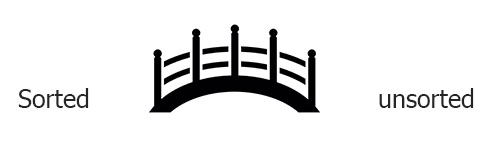

The 2nd element in a list, (since the 1st element is already sorted)

acts as a bridge between two parts, a sorted list
and an unsorted list.
Our goal is to move all the unsorted elements over the bridge and sort them out on the other side
Worst case occurs when the array starts out in reversed order (big to small). This takes maximum amount of comparisons
Best case is when the list is already sorted small to big. It only takes one comparison
the array is sorted after n-1 passes. Just like Selection sort
After the kth pass, elements at a[0] through a[k] are sorted with respect to each other.
tip: When we are dealing with a large n, insertion sorts are not efficient
Starting with the 2nd element at array[1].
Given these elements
43, 32, 76, 99, 18, 98

32, 43, 76, 99, 18, 98
1st pass: 32 is insterted into right place, 43 moved down
Our sorted list is 32, 43. Now we move onto the next one, 76
2nd pass: 76 is already in the right spot because it is more than 32 and 43
3rd pass: 32, 43, 76, 99, 18, 98
Our sorted list is 32, 43, 76. Now we move onto the next one, 99
99 is already in the right spot because it is the greatest in
the sorted list and should go last
4th pass: 32, 43, 76, 99, 18, 98
Our sorted list is 32, 43, 76, 99. Now we move onto the next one, 18
18 is smaller than every element in our sorted list
so 18 should be placed first and the others move down
5th pass: 18, 32, 43, 76, 99, 98
Our sorted list is now 18, 32, 43, 76, 99. Now we move onto our last element in the unsorted list, 98
98 is smaller than 99 but bigger than rest
98 is placed before 99 and now all elements are sorted
4th pass: 32, 43, 76, 99, 18, 98
Done! The array of 6 elements took 6 passes to be sorted using the insertion sort!